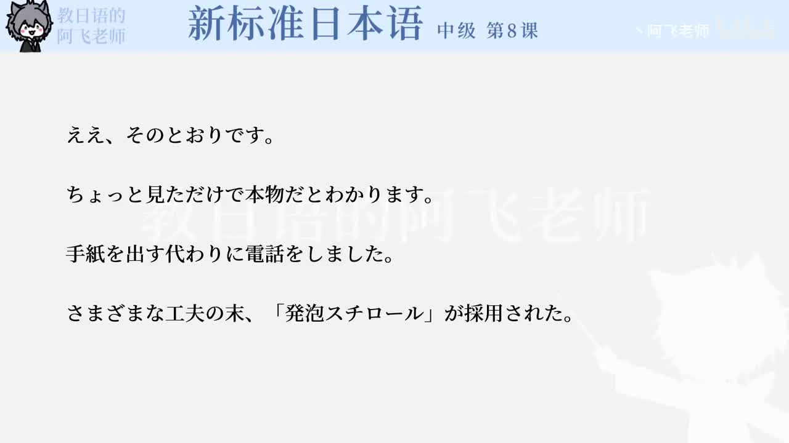

Bilibili P139 · Grammar Briefing
企画書の文法
围绕“金星”中国推广策划书，学习如何缩小目标、提出方案、说明范围、设置栏目、委婉建议，并把企划推进到取材行动。
全篇听力精讲
按 12 个语法点轮播。每项包含日语例句、中文意思、接续、常见用法和易错提醒，可暂停、跳转、倍速播放。
这一讲解决什么
企划表达用「ターゲットを～に絞る」「～に力を入れる」把方案说得具体。
委婉提案用「～てはどうでしょうか」「～てはどうかと考えています」避免命令式推进。
信息展开用「～について」「～だけじゃなくて」「～とか」扩展企划内容和取材角度。
第8课企划链
1 · 承接前情先日の話では
2 · 锁定目标若者に絞る
3 · 提出手段三つに力を入れる
4 · 设计栏目故郷を探る
5 · 推进取材行ってみませんか
12组语法与企划表达
企划核心词汇
整块记忆的搭配
练习与复习
来源说明：视频标题、时长、CID 和首帧来自 Bilibili 公开视频接口；P139 无公开字幕。本页依据该视频对应的《新标准日本语》中级第8课“企画書”语法与课文例句整理，不是视频逐字稿。